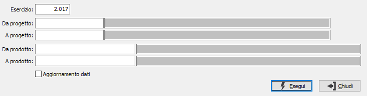

Ricalcolo saldi progetti
Il programma effettua un controllo sulla correttezza dei saldi dei progetti in relazione ai movimenti inseriti nel periodo richiesto. Viene visualizzato un messaggio che indica se ci sono inesattezze ed è necessario effettuare l'operazione in definitivo per memorizzare i dati ricalcolati correttamente.

ESERCIZIO: campo numerico che indica l’esercizio che si desidera analizzare, viene proposto l’esercizio attuale.
DA PROGETTO: eventuale codice del progetto, presente in anagrafica Progetti, da cui si desidera iniziare la selezione del ricalcolo. Confermando a vuoto, la selezione inizia con il primo progetto valido. Sul campo è attiva la ricerca (F9) sull’anagrafica progetti.
A PROGETTO: eventuale codice del progetto, presente in anagrafica Progetti, a cui si desidera terminare la selezione del ricalcolo. Confermando a vuoto, la selezione termina con l’ultimo valido. Sul campo è attiva la ricerca (F9) sull’anagrafica progetti.
DA PRODOTTO: eventuale codice dell'articolo, presente in anagrafica Prodotti, da cui si desidera iniziare la selezione del ricalcolo. Confermando a vuoto, la selezione inizia con il primo prodotto valido. Sul campo è attiva la ricerca (F9) sull’anagrafica prodotti.
A PRODOTTO: eventuale codice dell'articolo, presente in anagrafica Prodotti, a cui si desidera terminare la selezione del ricalcolo. Confermando a vuoto, la selezione termina con l’ultimo valido. Sul campo è attiva la ricerca (F9) sull’anagrafica prodotti.
AGGIORNAMENTO DATI: check box: la presenza della spunta effettua il concreto aggiornamento dei valori saldi.